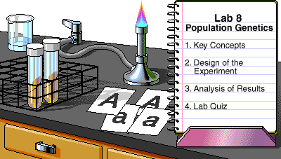

To make the most out of your LabBench experience, review the LabBench Tips.
To make the most out of your LabBench experience, review the LabBench Tips.
|
Key to Icons
|
 Safety
Safety Lab Skills
Lab Skillsby Theresa Knapp Holtzclaw
© 1998, Peregrine Publishers, Inc. All Rights Reserved.
Development Team
The Hardy-Weinberg law of genetic equilibrium provides a mathematical model for studying evolutionary changes in allelic frequency within a population. In this laboratory, you will apply this model by using your class as a sample population.
